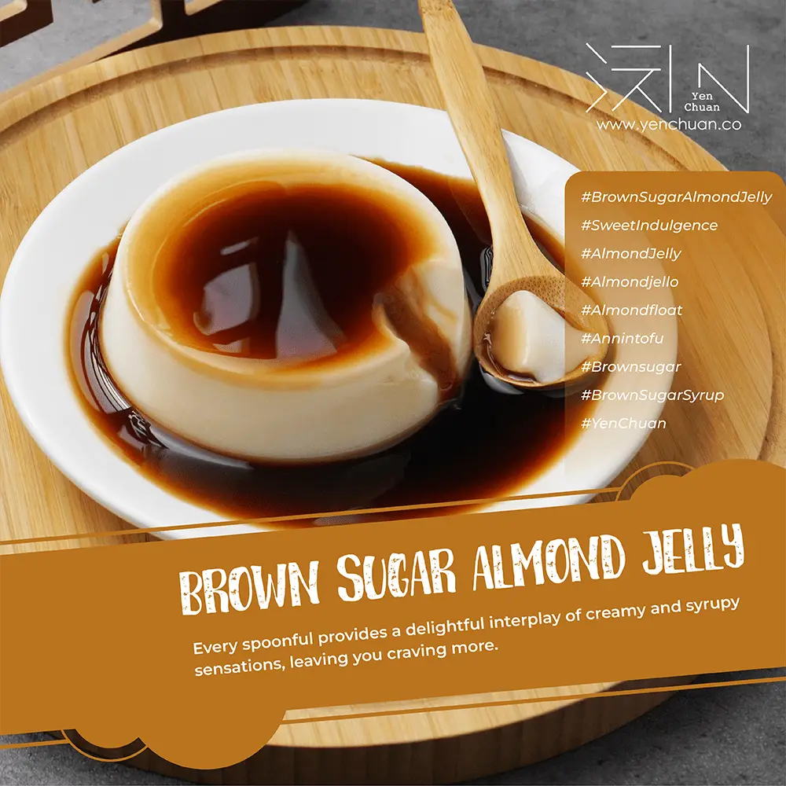

文章 / 飲品配方與資訊
Fancy a sweet treat? Try brown sugar almond jelly
這篇是英文原文，尚未完成繁體中文翻譯。中文選單與相關商品連結不會切回英文介面。

查看英文原文（尚未翻譯）
If you have a sweet tooth and appreciate the wonders of Asian desserts, why not try out the spectacular tastes and textures of Brown Sugar Almond Jelly? This delightful treat, made with almond jelly and rich brown sugar syrup, is sure to leave you craving for more!

What’s Almond jelly
Almond Jelly, also known as almond jello or almond/annin tofu is a soft, jellied dessert popular in Southern China. It has since spread to its neighbouring countries, such as Japan, Hongkong, and Taiwan.
Aside from Asia, this treat has also made its home in Hawaii, where it’s called almond float.
Despite its name, it actually has nothing to do with almonds! Rather, this delicacy was traditionally made by combining ground apricot kernels with milk or water. The mixture is thickened with a gelling agent like agar-agar, then chilled until set.
While it’s akin to Italy’s popular Panna Cotta, almond tofu is healthier since there is no heavy cream included. Dim sum and Chinese restaurants often serve this delicate jelly as a complimentary dessert.


As it grew in popularity in different countries, many countries started making variants of this classic treat.
While the most traditional way to enjoy it is with osmanthus syrup, it has since transformed into a chilled treat with mixed fruits. In Taiwan, people often add brown sugar to the jelly too!
Take a spoonful!
This jelly has a distinctive sweet, nutty taste, carried in the jelly’s smooth silky texture. The subtle sweetness of the jelly is elevated when paired with the rich, velvety brown sugar syrup. With every spoonful, the syrup’s rich caramel-like tastes complements the almond flavour perfectly! The tender jelly and the syrup create an delicate mouthfeel, a culinary gem to be savoured.
Slurp up the smooth, creamy jelly, let the brown sugar syrup drizzle tease your taste buds, and immerse yourself in the symphony of flavors and textures. Whether as a comforting after-dinner treat for yourself or to share it with loved ones, this delicious jelly is sure to become a treasured addition to your dessert collection.

Brown Sugar Almond Jelly
Every spoonful provides a delightful interplay of creamy and syrupy sensations, leaving you craving for more.
What you’ll need
How to make
Add the powder and water to the bowl, mix well
Refrigerate for about 1 to 2 hours or until completely set and chilled.
Top with brown sugar syrup. Serve cold.
And there you have it!
Brown sugar almond jelly is the perfect pick-me-up, or a treat to share with family and friends.
Whip up a batch of almond jelly, drizzle on some brown sugar syrup, and dive into this sea of culinary bliss!